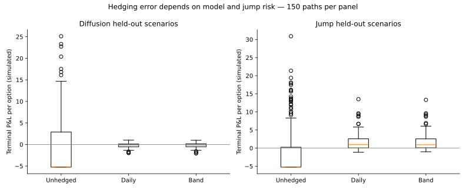
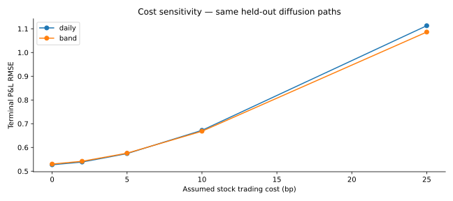
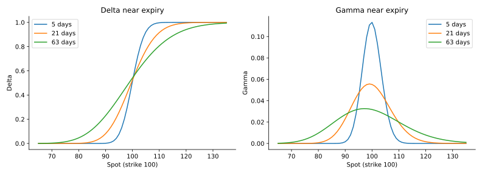
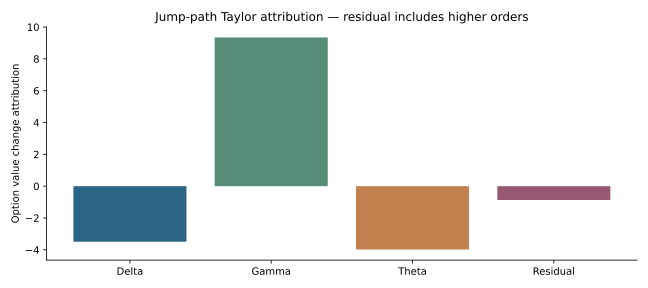
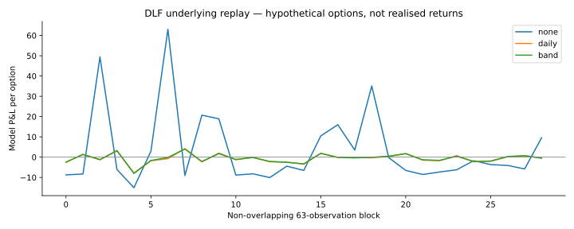

Pricing validation, cost-aware hedging and held-out stress evaluation.
Validate delta, gamma, vega, theta and rho against numerical derivatives. Select one band on 50 training paths, then freeze it before 900 held-out policy evaluations. Track a long call, a short-delta hedge, financing interest and transaction costs. All paths reconcile to a self-financing P&L identity.
20 tests cover parity, Greeks, implied-volatility inversion, expiry, accounting, future-data mutation and cost direction.

Daily hedging reduces diffusion RMSE from 7.036 unhedged to 0.574 per option. In jump/regime stress, its RMSE rises to 2.945. The selected band does not materially improve on daily hedging. Positive average stress P&L reflects a misspecified constant-volatility premium, not proven alpha.

Higher stock-trading costs change the hedge-error trade-off. Option spreads, margin, tax, dividends and borrow costs remain unmodelled.

Gamma concentrates near the strike as expiry approaches. More frequent rebalancing does not eliminate jump or model risk.

Lagged delta, gamma and theta approximate option-value changes. The residual is retained and includes higher-order terms and jump effects. Vega/rho are validated sensitivities, not signals in these constant-IV/rate runs.

29 non-overlapping DLF windows use preceding-60-return volatility proxies and theoretical ATM calls. Adjusted underlying prices and fixed business-time steps are simplifying assumptions; these are not historical option-trade returns.
Repository · All results, ledgers and hashes
pip install -r requirements.txtpython -m unittest -vpython run.py
Sources: public synthetic generator and locally cached Yahoo Finance DLF adjusted closes, accessed 24 October 2026. Raw vendor prices are not redistributed. Pricing reference: Options Industry Council. AI-assisted implementation; assumptions and data limitations are recorded in the README.